Asistir al seminario no tiene costo
La participación en todas las ponencias, conversatorios, grupos de trabajo, plenario y espacios de encuentro del I Congreso ACHETSU 2026 es totalmente gratuita para las personas inscritas.
Asociación Chilena de Enseñanza en Trabajo Social Universitario
Desafíos de la academia en torno a la formación profesional en clave de nuevas tecnologías y nuevos campos profesionales.
Un espacio de diálogo, reflexión y construcción colectiva entre las instituciones formadoras en Trabajo Social del país, proyectado hacia la Agenda ACHETSU 2026–2029 y la consolidación de ponencias en formato libro.
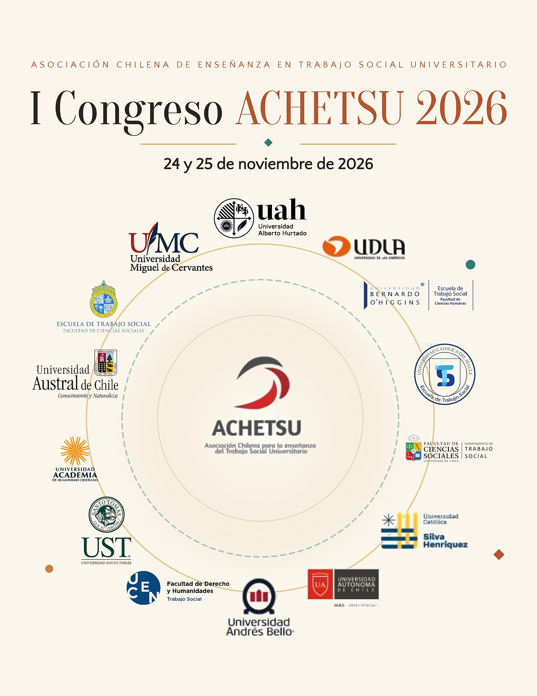
24 y 25 de noviembre de 2026
Recepción y acreditación desde las 09:00 h (con inscripción presencial disponible)Universidad Alberto Hurtado
Av. Libertador Bernardo O'Higgins 1825, Santiago (Metro Los Héroes)ACHETSU · Red Universitaria
Agenda 2026–2029, publicación en libro y renovación de DirectivaFormulario de inscripción para personas naturales interesadas en asistir al I Congreso ACHETSU 2026 (24 y 25 de noviembre en la Universidad Alberto Hurtado).
La participación en todas las ponencias, conversatorios, grupos de trabajo, plenario y espacios de encuentro del I Congreso ACHETSU 2026 es totalmente gratuita para las personas inscritas.
Invitamos y recomendamos asistir tanto el martes 24 como el miércoles 25 de noviembre de 2026, para acompañar íntegramente las ponencias por ejes, el conversatorio deliberativo y el plenario de construcción de la Agenda ACHETSU 2026–2029.
Al completar este formulario, tu inscripción quedará registrada automáticamente y recibirás en tu correo electrónico el comprobante oficial con tu folio de acreditación.
Completa tus datos académicos o institucionales para agilizar tu acreditación presencial el día del evento.
Repensar la enseñanza universitaria del Trabajo Social frente a la transformación tecnológica, los campos emergentes y el fortalecimiento asociativo.
El Trabajo Social se encuentra ante un escenario en el que las fronteras que tradicionalmente han delimitado la formación, el ejercicio profesional y los problemas sociales están nuevamente en movimiento. Las tecnologías digitales, la inteligencia artificial, las nuevas configuraciones del trabajo, las transformaciones de las políticas públicas y la aparición de escenarios inéditos de intervención modifican cómo se produce conocimiento, se construyen vínculos, se toman decisiones y se despliega la acción profesional.
La academia está llamada a revisar sus propuestas formativas, sus currículos, sus estrategias pedagógicas y sus vínculos con los espacios profesionales, desde una perspectiva crítica, ética, situada y comprometida con los derechos humanos y la justicia social.
«El Congreso ACHETSU 2026 propone desplazar la conversación desde “¿cómo adaptar la formación a los cambios?” hacia una interrogación más amplia: ¿qué Trabajo Social estamos formando para un campo profesional que está cambiando sus coordenadas?»
Junto a los espacios tradicionales de desempeño emergen ámbitos vinculados con la transformación digital, las desigualdades contemporáneas, las crisis socioambientales, las migraciones, las violencias, los cuidados, las transformaciones del mundo laboral, los derechos humanos, la salud, el envejecimiento, el territorio y la participación social.
Las propuestas elaboradas por los grupos de trabajo durante ambas jornadas se sistematizarán en un documento de síntesis denominado Agenda ACHETSU 2026–2029: desafíos y propuestas para la enseñanza del Trabajo Social en Chile, que recogerá los principales acuerdos, preocupaciones y líneas de acción identificadas por las instituciones participantes, mientras que las ponencias se consolidarán en un producto con formato libro.
Generar un espacio académico, asociativo y deliberativo para analizar las transformaciones actuales que desafían la formación profesional en Trabajo Social, intercambiar experiencias entre las instituciones participantes y construir orientaciones y propuestas para el desarrollo de ACHETSU durante el período 2026–2029.
En el marco del mismo Congreso se llevarán a cabo las elecciones de la nueva Directiva. Al finalizar el primer día (24 de noviembre) se presentarán las candidaturas y al día siguiente (25 de noviembre) se realizarán las votaciones.
Revisar calendario electoral →Las ponencias, los conversatorios y los grupos de trabajo se organizan en torno a tres ejes complementarios.
Aborda las transformaciones que las tecnologías digitales y la inteligencia artificial están produciendo en la educación superior y en el ejercicio profesional del Trabajo Social, discutiendo sus implicancias curriculares, pedagógicas, éticas y profesionales.
Busca reconocer las transformaciones que experimenta el campo profesional y los nuevos espacios de actuación, compartiendo experiencias institucionales y profesionales para identificar demandas emergentes e implicancias formativas.
Orientado a discutir el papel de ACHETSU como espacio de articulación, intercambio y fortalecimiento de las instituciones formadoras de Trabajo Social en Chile, proyectando prioridades para la nueva Directiva.
Equipo directivo organizador, expositoras invitadas y representantes institucionales que presentan ponencias en cada eje temático del Congreso.
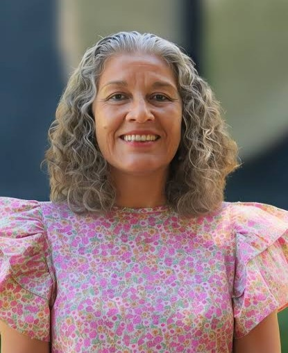
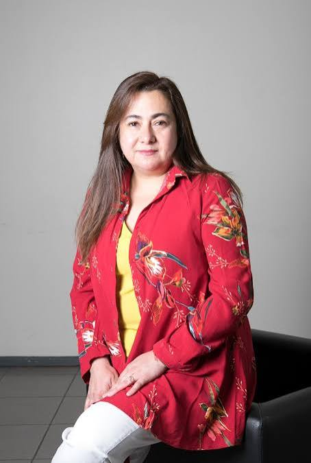
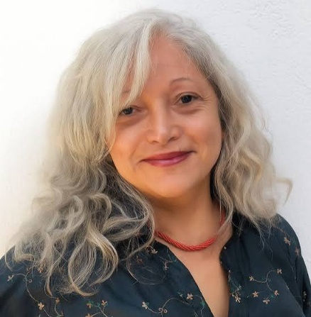
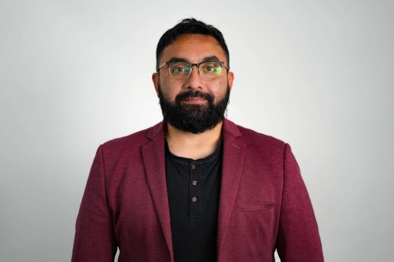
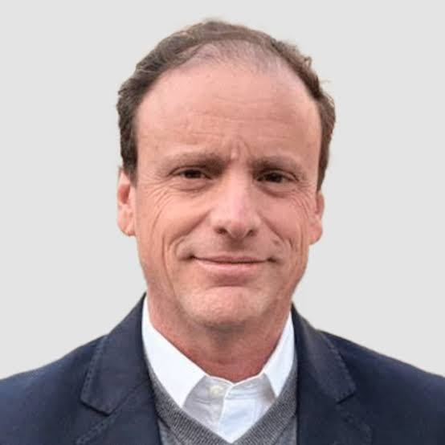
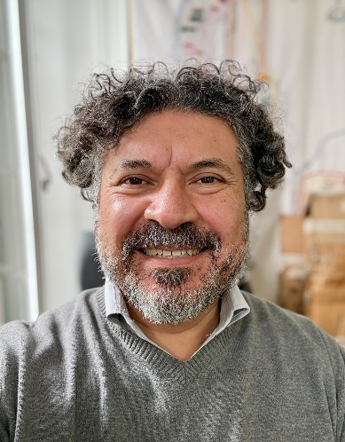
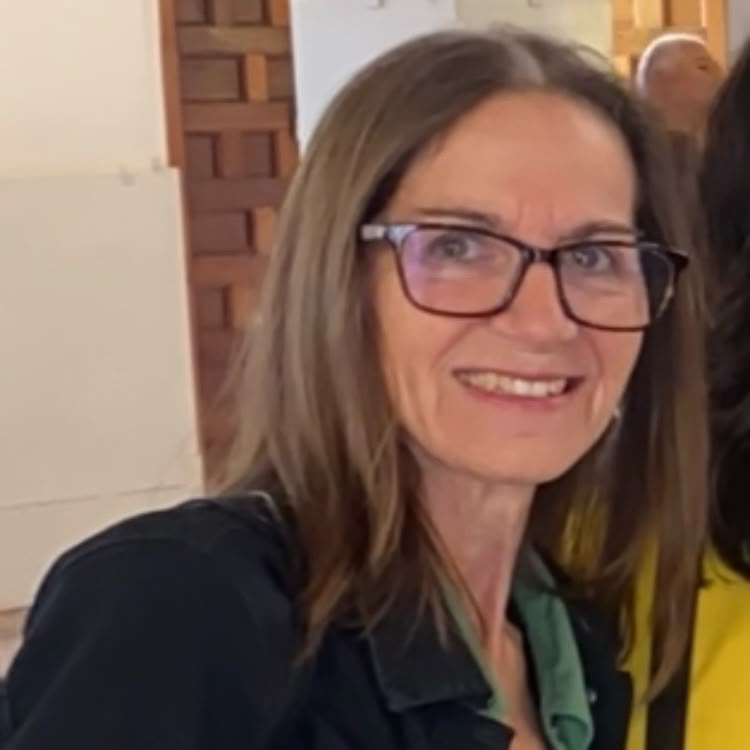
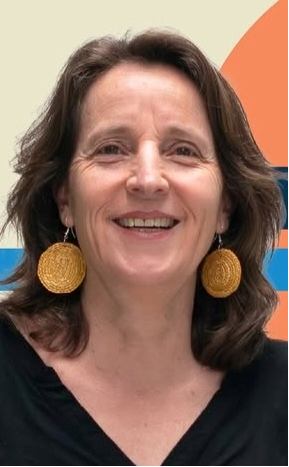
Presentación: Memorias póstumas (junto a Dra. Camila Véliz Bustamante).
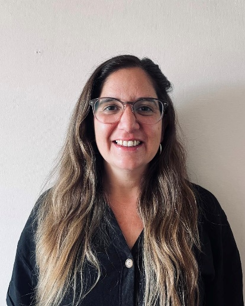
Presentación: Memorias póstumas (junto a Dra. Gabriela Rubilar Donoso).
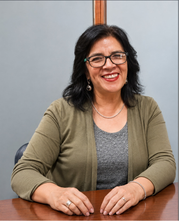
Presentación: Promesas espectrales: felicidad, éxito y futuros heredados en el bienestar subjetivo del estudiantado universitario.
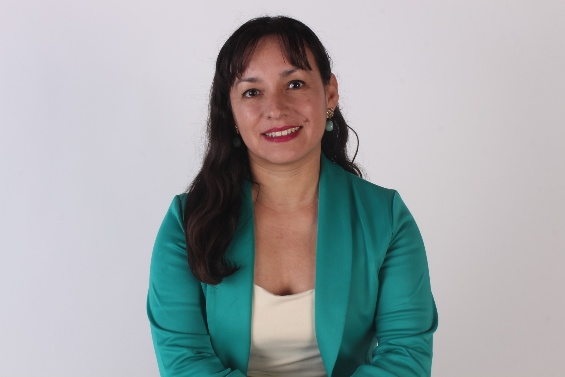
Directora de Carrera de Trabajo Social
Ponencia: Huellas digitales éticas e inteligencia artificial generativa: desafíos para la formación profesional en Trabajo Social.
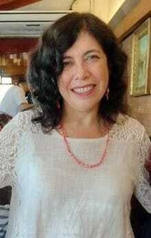
Directora de Trabajo Social
Ponencia: Tecnología e innovación en la enseñanza del trabajo social, oportunidades y desafíos.
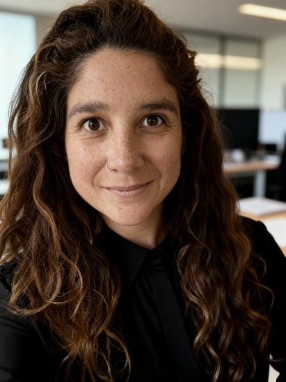
Directora de Trabajo Social
Ponencia: Desafiando la formación profesional.
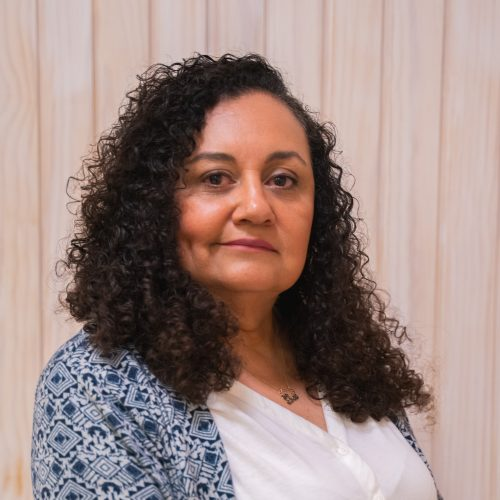
Directora del Departamento de Trabajo Social
Ponencia: Pensar, sentir y transformar desde lo público: el sello crítico de la formación en Trabajo Social frente a la incertidumbre de nuestro tiempo.
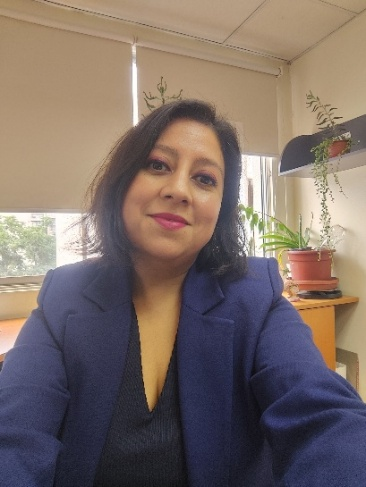
Jefa de Carrera de Trabajo Social
Ponencia: Entre continuidades y transformaciones: configuraciones del campo de intervención social y sus horizontes profesionales.
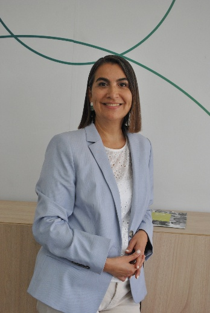
Directora Nacional de Trabajo Social
Ponencia: Encrucijadas en la formación del Trabajo Social en escenarios convulsos.
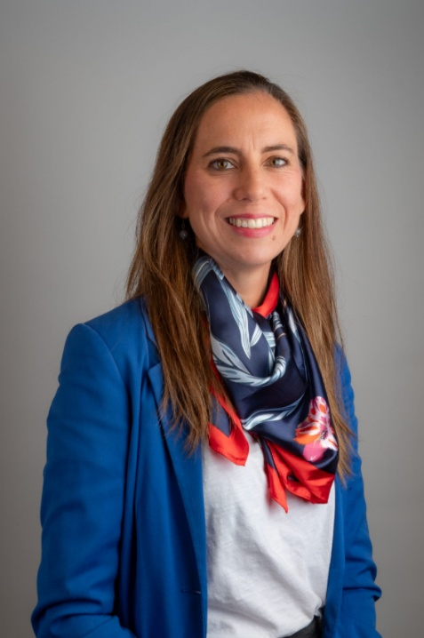
Directora de la Escuela de Trabajo Social
Ponencia: Formar sin fragmentar y pensar a largo plazo en Trabajo Social.
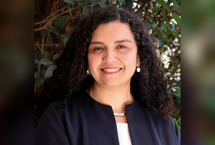
Directora de Carrera de Trabajo Social
Ponencia: Rumbos de la Intervención Profesional.
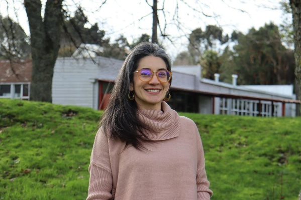
Directora de Escuela de Trabajo Social
Ponencia: Formación práctica e iniciativas estudiantiles en campos profesionales emergentes, en contextos de descentralización. Experiencias desde el sur austral.
Directora de Carrera de Trabajo Social
Ponencia: Repensar el trabajo social desde el género: desafíos contemporáneos para la formación e intervención profesional.
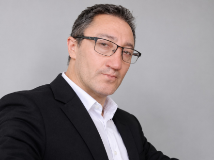
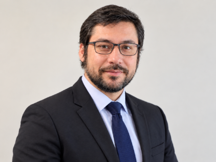
Director (I) de la Escuela de Trabajo Social · Coordinador Académico y docente
Ponencia: Más allá de los nuevos campos de intervención: repensando el trabajo social futuro.
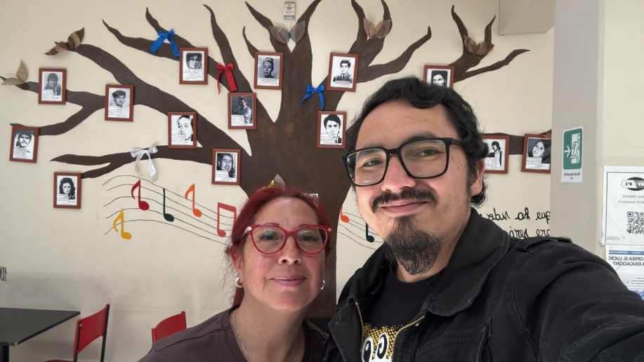
Académica investigadora y representante ACHETSU · Núcleo académico Escuela de Trabajo Social
Ponencia: Ruta para la innovación curricular. Experiencia Escuela de Trabajo Social de la UAHC.
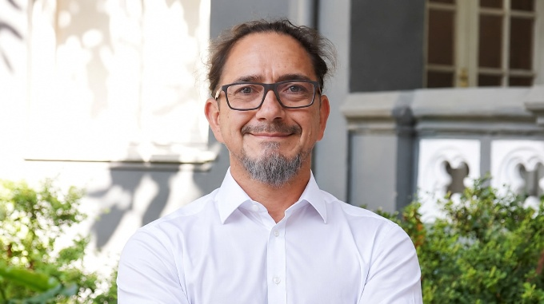
Director del Magíster Interdisciplinario en Intervención Social
Ponencia: La enseñanza del Trabajo Social por venir: entre las herencias del presente y la apertura a lo imposible.
El Congreso combina presentación institucional, trabajo grupal por eje, conversatorio transversal y plenario de síntesis.
Como representantes institucionales, las directoras, directores y equipos de departamentos, escuelas o carreras de Trabajo Social realizarán las ponencias vinculadas a los tres ejes temáticos.
Compartirán experiencias académicas, investigaciones, innovaciones curriculares, prácticas pedagógicas y propuestas orientadas a las transformaciones de la formación y del campo profesional.
Espacio transversal de diálogo entre representantes de las instituciones participantes, académicas, académicos y socias/os naturales, orientado a problematizar los desafíos actuales de la enseñanza del Trabajo Social y las respuestas que requiere la academia.
Las personas participantes se distribuirán en grupos de trabajo asociados a los tres ejes del Congreso, liderados por las universidades inscritas en cada eje, para analizar los desafíos identificados y elaborar propuestas en torno a tres preguntas generales transversales:
Eje 1: Universidad Central de Chile, Universidad Bernardo O'Higgins, Universidad Andrés Bello (Sede República) y Universidad de Chile. Eje 2: Universidad Católica Silva Henríquez, Universidad Santo Tomás, Pontificia Universidad Católica de Chile, Universidad Autónoma de Chile (Sede Santiago) y Universidad Austral de Chile (Sede Puerto Montt). Eje 3: Universidad Católica del Maule, Universidad Miguel de Cervantes, Universidad Academia de Humanismo Cristiano y Universidad Alberto Hurtado.
El encuentro culmina con la presentación de las propuestas y conclusiones de los grupos de trabajo en el plenario y la identificación de prioridades comunes.
Las propuestas se sistematizarán en el documento Agenda ACHETSU 2026–2029: desafíos y propuestas para la enseñanza del Trabajo Social en Chile, y las ponencias se consolidarán en una publicación en formato libro.
Organizado en dos jornadas presenciales en la Universidad Alberto Hurtado (martes 24 y miércoles 25 de noviembre de 2026).
Apoyo de estudiantes a cargo de recibir a las y los asistentes, verificar inscripciones y realizar nuevas inscripciones en caso necesario (registro alfabético en computadores).
Asociación Chilena de Enseñanza en Trabajo Social Universitario (ACHETSU).
Saludo institucional del Rector Cristián del Campo Simonetti SJ, Universidad Alberto Hurtado.
Intervención de Dr. Eduardo Canteros Gormaz, director del Departamento de Trabajo Social de la Universidad Alberto Hurtado.
Palabras de Doctoranda Ruth Lizana Ibaceta, primera presidenta de ACHETSU, y entrega de certificados de reconocimiento a directivas anteriores de ACHETSU.
Experiencias y desafíos de las instituciones universitarias:
Brunch para todas las personas asistentes.
Presentación de Dra. Gabriela Rubilar Donoso y Dra. Camila Véliz Bustamante.
Experiencias y desafíos de las instituciones universitarias:
Saludos internacionales, espacio asociativo y actividad musical de cierre de la primera jornada.
Exhibición de video biblioteca y apertura del segundo día.
Ponencia: «Promesas espectrales: felicidad, éxito y futuros heredados en el bienestar subjetivo del estudiantado universitario».
Experiencias y desafíos de las instituciones universitarias:
Trabajo deliberativo con el formulario de preguntas de los tres ejes, liderado por las universidades inscritas en cada eje.
Pausa y almuerzo tipo brunch para las personas participantes.
Presentación del trabajo colectivo desarrollado en torno a los tres ejes temáticos del Congreso, recogiendo las principales reflexiones, debates y propuestas surgidas del proceso de intercambio y análisis.
Palabras finales, proyección del trabajo asociativo y cóctel de clausura.
Estructura oficial sugerida para la presentación de ponencias en el I Congreso ACHETSU 2026.
Debe presentar de forma sintética:
Presentar el tema, su relevancia para el Trabajo Social y su relación con las transformaciones contemporáneas de la formación profesional y/o del campo de ejercicio.
Identificar el problema, pregunta o desafío que organiza la reflexión.
Desarrollar los principales conceptos, enfoques teóricos y debates que permiten comprender el problema abordado.
Se espera una perspectiva situada y crítica que dialogue con los debates actuales del Trabajo Social.
Núcleo de la ponencia. Puede adoptar distintas modalidades: resultados de investigaciones, sistematización de experiencias académicas o profesionales, innovaciones curriculares y pedagógicas, análisis institucionales, reflexiones teóricas y político-profesionales, o propuestas de formación e intervención.
Explicitar qué se ha realizado, aprendizajes obtenidos, tensiones identificadas e interrogantes abiertas. En investigaciones, incluir antecedentes metodológicos y resultados; en sistematizaciones, explicitar la experiencia y su proceso de análisis.
Identificar las implicancias del tema para:
Desarrollar propuestas concretas para fortalecer la enseñanza del Trabajo Social, considerando posibilidades de implementación en las universidades y espacios de colaboración interinstitucional.
Identificar, cuando corresponda, acciones que podrían ser promovidas por ACHETSU.
Conclusiones: sintetizar los principales aportes de la ponencia, sus contribuciones al debate académico y los desafíos que deja planteados para el desarrollo de la formación profesional.
Referencias bibliográficas: incluir las fuentes citadas en el trabajo.
Descarga en PDF las fichas oficiales de trabajo con las preguntas orientadoras y espacio para notas que se utilizarán durante los grupos de trabajo del seminario.
Uso en el seminario: cada formulario corresponde a uno de los tres ejes del I Congreso ACHETSU 2026 e incluye ficha de grupo, preguntas guía, orientaciones y espacio para registrar acuerdos destinados al plenario de la Agenda ACHETSU 2026–2029.
Ficha de trabajo para reflexionar sobre tecnologías digitales, inteligencia artificial, investigación, regulación y compromisos institucionales.
Descargar Formulario 1 (PDF) ↓Ficha de trabajo para analizar escenarios emergentes, vacíos de investigación, identidad profesional y vinculación interuniversitaria.
Descargar Formulario 2 (PDF) ↓Ficha de trabajo para definir el proyecto disciplinar, prioridades compartidas de investigación y hoja de ruta estratégica de ACHETSU.
Descargar Formulario 3 (PDF) ↓Escuelas, departamentos y carreras de Trabajo Social convocantes del I Congreso ACHETSU 2026.